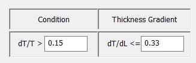
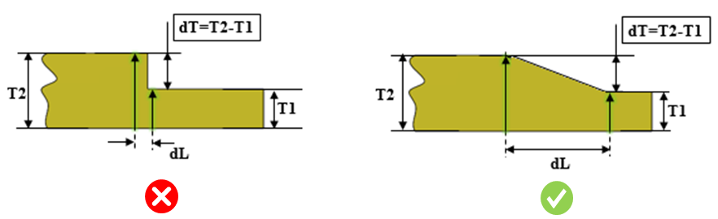

肉厚勾配（dT/dL）の値は、指定された値未満である必要があります。
部品の肉厚が急激に変化したり、不連続に変化したりすると、ダイカスト工程において材料流動不良、材料分布の不均一、不均一な冷却が発生します。
最大肉厚勾配（dT/dL）の推奨値は 0.33 です。この値は、材料の種類などの他の要因に応じて変化する制約があります。
このルールは、部品内で許容される最大肉厚勾配を指定するように構成できます。

dT = (T2 − T1) = 肉厚変化量
T = 該当領域における最小肉厚

勾配 = dT/dL = | (T2 − T1) / dL |